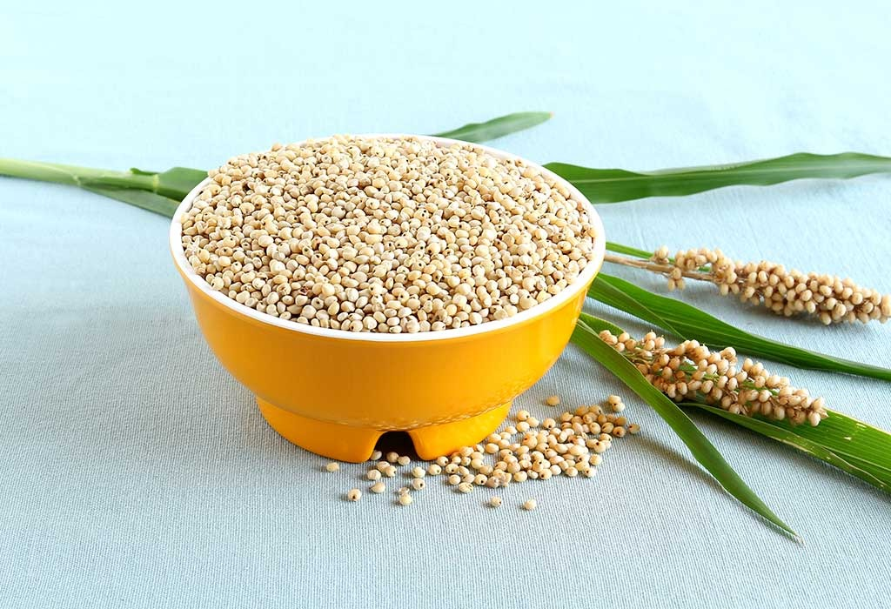

Price : Rs.450/-
Quantity : 1Kg
Today's offer : 13%
You saved Rs.58.5/-.
About this item
- the most important food and fodder crop of dryland agriculture
- primarily as human food in various forms, such as roti or bhakri (unleavened bread), or is cooked like rice
- Provides good antioxidants, B-vitamins